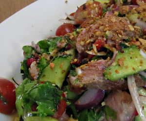

Thai Beef Salad
5 von 61,5 Esslöffel Lime-Juice, 1 Esslöffel Palmzucker, 1 Esslöffel Fischsauce,
2 Esslöffel Sesamöl, 1 Esslöffel Sojasauce, 2 Esslöffel geraffelter Ingwer sowie eine Knoblauchzehe vermengen. Pro Person ein Entrecote mit der Sauce marinieren und ca. zwei Stunden ziehen lassen. Den Rest der Sauce in eine grosse Schüssel geben.
Die Entrecotes a point braten und beiseite legen. Cherrytomaten, eine rote Zwiebel, Gurke, eine Chili, Pfefferminz, Koriander, 4 Kaffir Blätter rüsten und in die Schüssel geben. Das Fleisch in feine Streifen schneiden und zum Salat geben. Gut mischen. Vor dem servieren geröstete Erdnüsse darüber geben.
